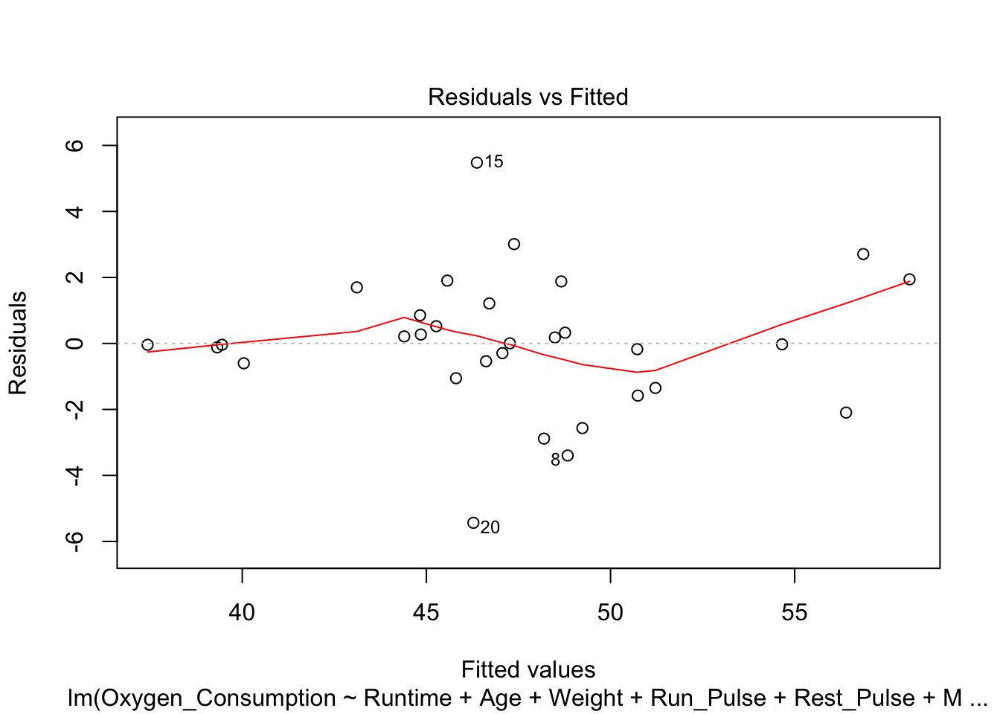

Project #2
Ming Chen & Wenqiang Feng
2/2/2017
You can also get the PDF format of Wenqiang’s Project.
library(readxl)
ads = read_excel("./data/Ads.xlsx")
ads$ad = as.factor(ads$ad)
fitness = read_excel("./data/Fitness.xlsx")
fitness$Gender = as.factor(fitness$Gender)Problem 1
a. Analysis of Variance
ads.lm = lm(sales~ad, data=ads)
anova(ads.lm)## Analysis of Variance Table
##
## Response: sales
## Df Sum Sq Mean Sq F value Pr(>F)
## ad 3 5866.1 1955.36 13.483 8.849e-08 ***
## Residuals 140 20303.2 145.02
## ---
## Signif. codes: 0 '***' 0.001 '**' 0.01 '*' 0.05 '.' 0.1 ' ' 1pval=anova(ads.lm)$`Pr(>F)`[1];pval## [1] 8.849476e-08- Conclusions: the p value is 8.84947639620973e-08, we therefore reject the \(H_{0}\). There is a strong evidence that the average sales among the 4 groups are significantly different.
b. Lvene’s test
library(car)
leveneTest(sales~ad, data=ads)## Levene's Test for Homogeneity of Variance (center = median)
## Df F value Pr(>F)
## group 3 0.8271 0.481
## 140pval=leveneTest(sales~ad, data=ads)$`Pr(>F)`[1]; pval## [1] 0.4810325- Conclusions: Result from the Levene’s test (p value = 0.4810325) indicates that the variances in the 4 groups are equal.
c. check if the residuals are modeled well by a normal distribution
par(mfrow=c(1,2))
plot(ads.lm, which=2)
plot(ads.lm, which=3)par(mfrow=c(1,1))shapiro.test(ads.lm$residuals)##
## Shapiro-Wilk normality test
##
## data: ads.lm$residuals
## W = 0.99173, p-value = 0.5663pval=shapiro.test(ads.lm$residuals)$p.value; pval## [1] 0.5663145- Conclusion: Yes. From the normal QQ plot, we can see that most of the points are located on the line. And the squared root of standardized residuals is independent from the fitted values. The pval from the shapiro test for the residuals is 0.5663145, indicating a normal distribution.
d. Tukey’s HSD procedure
ads.aov = aov(sales~ad, data=ads)
TukeyHSD(ads.aov, ordered = T)## Tukey multiple comparisons of means
## 95% family-wise confidence level
## factor levels have been ordered
##
## Fit: aov(formula = sales ~ ad, data = ads)
##
## $ad
## diff lwr upr p adj
## people-display 10.055556 2.6751252 17.435986 0.0029955
## radio-display 14.333333 6.9529029 21.713764 0.0000080
## paper-display 16.666667 9.2862363 24.047097 0.0000002
## radio-people 4.277778 -3.1026526 11.658208 0.4360116
## paper-people 6.611111 -0.7693193 13.991542 0.0963573
## paper-radio 2.333333 -5.0470971 9.713764 0.8439578Conclusions: given a 95% confidence level, the mean sales between
- people and display
- radio and display
- paper and display
are significantly different. Among the three groups, people has the largest average while display has the smallest average.
e. analysis of variance on the rank
ads.kruskal.wallis = kruskal.test(sales~ad, data=ads); ads.kruskal.wallis##
## Kruskal-Wallis rank sum test
##
## data: sales by ad
## Kruskal-Wallis chi-squared = 33.642, df = 3, p-value = 2.358e-07pval=ads.kruskal.wallis$p.value; pval## [1] 2.357644e-07- Conclusions: the p value from the Kruskal Wallis test is 2.3576441977402e-07, indicating that at least two of the four groups are significantly different in the average sales. From the Levene’s test in part (b), we know that the variances in the 4 groups are equal, so the application of Kruskal Wallis is appropriate here.
f. Tukey’s HSD procedure on the ranks
library('PMCMR')
summary(posthoc.kruskal.nemenyi.test(ads$sales, ads$ad, dist = "Tukey"))##
## Pairwise comparisons using Tukey and Kramer (Nemenyi) test
## with Tukey-Dist approximation for independent samples
##
## data: ads$sales and ads$ad
##
##
## P value adjustment method: none
## H0 statistic p.value
## 1 display = paper 7.649437 3.8e-07
## 2 display = people 4.844577 0.0034
## 3 display = radio 6.372866 3.9e-05
## 4 paper = people 2.804860 0.1942
## 5 paper = radio 1.276571 0.8034
## 6 people = radio 1.528289 0.7014Conclusions: results from the multiple comparisons of rank sums indicate that, the following pairs of groups are significantly different in average sales:
- paper-display
- people-display
- radio-display
Problem 2
a. fit the model with all predictors
1. Assumptions of the regression model
- Assumptions:
- the relationship between predictors and reponse variable is linear
- all variables are multivariate normal
- homoscedasticity: the error terms along the regression are equal.
- there is little or no multicollinearity
- little or no autocorrelation
fitness.lm = lm(Oxygen_Consumption~Runtime+Age+Weight+Run_Pulse+
Rest_Pulse+Maximum_Pulse+Performance, data=fitness)
summary(fitness.lm)##
## Call:
## lm(formula = Oxygen_Consumption ~ Runtime + Age + Weight + Run_Pulse +
## Rest_Pulse + Maximum_Pulse + Performance, data = fitness)
##
## Residuals:
## Min 1Q Median 3Q Max
## -5.4357 -0.8278 -0.0270 1.0324 5.4787
##
## Coefficients:
## Estimate Std. Error t value Pr(>|t|)
## (Intercept) 93.33753 36.49782 2.557 0.01761 *
## Runtime -2.08804 2.22856 -0.937 0.35852
## Age -0.21066 0.10519 -2.003 0.05713 .
## Weight -0.07741 0.05681 -1.363 0.18623
## Run_Pulse -0.36618 0.12299 -2.977 0.00674 **
## Rest_Pulse -0.01389 0.07114 -0.195 0.84694
## Maximum_Pulse 0.30490 0.13990 2.179 0.03979 *
## Performance 0.25756 1.02373 0.252 0.80359
## ---
## Signif. codes: 0 '***' 0.001 '**' 0.01 '*' 0.05 '.' 0.1 ' ' 1
##
## Residual standard error: 2.373 on 23 degrees of freedom
## Multiple R-squared: 0.8479, Adjusted R-squared: 0.8016
## F-statistic: 18.32 on 7 and 23 DF, p-value: 5.171e-08- Residuals vs predictors plots
res = fitness.lm$residuals
n = colnames(fitness)[-c(1:3, 6)]
fitness$Residuals = res
##plot(Residuals~as.numeric(Gender), data=fitness, xlab="Gender: 1=Female; 2=Male")
plot(Residuals~Runtime, data=fitness, xlab="Runtime")plot(Residuals~Age, data=fitness, xlab="Age")plot(Residuals~Weight, data=fitness, xlab="Weight")plot(Residuals~Run_Pulse, data=fitness, xlab="Run Pulse")plot(Residuals~Rest_Pulse, data=fitness, xlab="Rest Pulse")plot(Residuals~Maximum_Pulse, data=fitness, xlab="Maximum Pulse")
plot(Residuals~Performance, data=fitness)- Residuals vs fitted values
plot(fitness.lm, which=1)
- Conclusions: the residuals appear to be randomly scattered around zero for all plots with predictors and fitted value. And the vertical width of the scatters seems independent of the predictor or fitted values. From the plots, it’s reasonable to assume that the error terms have a mean of zero and the variance is constant. So assumptions in our regression module are satisfied.
2. studendized residuals and Cook’s D against the observation number
rstudentVal = rstudent(fitness.lm)
plot(rstudentVal~c(1:length(rstudentVal)), xlab="Observation number", ylab="Studendized residuals")
abline(h=0, col="blue", lty=3)- Cook’s distance against the observation number.
plot(fitness.lm, which=4)
abline(h=4/31, col="blue", lty=3)
sorted_D = sort(cooks.distance(fitness.lm))
data.frame(obs_ID = names(sorted_D), cooks_D = sorted_D)## obs_ID cooks_D
## 18 18 5.765037e-08
## 4 4 1.068840e-05
## 28 28 2.654757e-05
## 31 31 7.213529e-05
## 24 24 2.274227e-04
## 21 21 3.700198e-04
## 7 7 4.022192e-04
## 9 9 5.017736e-04
## 29 29 5.664852e-04
## 14 14 8.766836e-04
## 19 19 9.808297e-04
## 16 16 3.006708e-03
## 30 30 3.916771e-03
## 23 23 4.848092e-03
## 22 22 7.682072e-03
## 27 27 7.983004e-03
## 26 26 8.510727e-03
## 17 17 1.046166e-02
## 10 10 1.557731e-02
## 25 25 1.618946e-02
## 13 13 3.073773e-02
## 8 8 3.478732e-02
## 6 6 3.529342e-02
## 5 5 4.307975e-02
## 3 3 5.154157e-02
## 20 20 6.333362e-02
## 11 11 6.424308e-02
## 1 1 1.013559e-01
## 12 12 1.172345e-01
## 15 15 1.724050e-01
## 2 2 1.833781e-01- Conclusions:
- Based on the Cook’s distance, observations 2 and 15 are larger than the value 4/31 = 0.1290323, and therefore, are potential influential observations.
- Remove observation 2 and 15 and refit the model
b. stepwise regression
fitness = fitness[-c(2,15), ]
fitness.lm = lm(Oxygen_Consumption~Runtime+Age+Weight+Run_Pulse+
Rest_Pulse+Maximum_Pulse+Performance, data=fitness)
summary(fitness.lm)##
## Call:
## lm(formula = Oxygen_Consumption ~ Runtime + Age + Weight + Run_Pulse +
## Rest_Pulse + Maximum_Pulse + Performance, data = fitness)
##
## Residuals:
## Min 1Q Median 3Q Max
## -5.2904 -0.7190 0.1309 0.9909 2.8810
##
## Coefficients:
## Estimate Std. Error t value Pr(>|t|)
## (Intercept) 87.2013149 33.1709047 2.629 0.0157 *
## Runtime -1.1246246 2.0346292 -0.553 0.5863
## Age -0.2514006 0.0929240 -2.705 0.0132 *
## Weight -0.1070596 0.0510055 -2.099 0.0481 *
## Run_Pulse -0.2870006 0.1306146 -2.197 0.0394 *
## Rest_Pulse 0.0003888 0.0615322 0.006 0.9950
## Maximum_Pulse 0.2050578 0.1533982 1.337 0.1956
## Performance 0.6348160 0.9350117 0.679 0.5046
## ---
## Signif. codes: 0 '***' 0.001 '**' 0.01 '*' 0.05 '.' 0.1 ' ' 1
##
## Residual standard error: 2.047 on 21 degrees of freedom
## Multiple R-squared: 0.8668, Adjusted R-squared: 0.8224
## F-statistic: 19.52 on 7 and 21 DF, p-value: 7.318e-08stepwiseFit = step(fitness.lm, direction = "both", test="F")## Start: AIC=48.19
## Oxygen_Consumption ~ Runtime + Age + Weight + Run_Pulse + Rest_Pulse +
## Maximum_Pulse + Performance
##
## Df Sum of Sq RSS AIC F value Pr(>F)
## - Rest_Pulse 1 0.0002 87.990 46.188 0.0000 0.99502
## - Runtime 1 1.2801 89.270 46.607 0.3055 0.58628
## - Performance 1 1.9314 89.921 46.817 0.4610 0.50459
## <none> 87.990 48.188
## - Maximum_Pulse 1 7.4873 95.477 48.556 1.7869 0.19560
## - Weight 1 18.4599 106.450 51.711 4.4057 0.04809 *
## - Run_Pulse 1 20.2299 108.220 52.189 4.8282 0.03936 *
## - Age 1 30.6683 118.658 54.860 7.3194 0.01325 *
## ---
## Signif. codes: 0 '***' 0.001 '**' 0.01 '*' 0.05 '.' 0.1 ' ' 1
##
## Step: AIC=46.19
## Oxygen_Consumption ~ Runtime + Age + Weight + Run_Pulse + Maximum_Pulse +
## Performance
##
## Df Sum of Sq RSS AIC F value Pr(>F)
## - Runtime 1 1.365 89.355 44.634 0.3412 0.565075
## - Performance 1 2.123 90.112 44.879 0.5307 0.473988
## <none> 87.990 46.188
## - Maximum_Pulse 1 7.489 95.479 46.557 1.8724 0.185013
## + Rest_Pulse 1 0.000 87.990 48.188 0.0000 0.995018
## - Weight 1 18.479 106.469 49.716 4.6203 0.042854 *
## - Run_Pulse 1 20.292 108.282 50.206 5.0735 0.034605 *
## - Age 1 33.139 121.128 53.457 8.2856 0.008726 **
## ---
## Signif. codes: 0 '***' 0.001 '**' 0.01 '*' 0.05 '.' 0.1 ' ' 1
##
## Step: AIC=44.63
## Oxygen_Consumption ~ Age + Weight + Run_Pulse + Maximum_Pulse +
## Performance
##
## Df Sum of Sq RSS AIC F value Pr(>F)
## <none> 89.35 44.634
## - Maximum_Pulse 1 8.740 98.09 45.340 2.2496 0.147251
## + Runtime 1 1.365 87.99 46.188 0.3412 0.565075
## + Rest_Pulse 1 0.085 89.27 46.607 0.0209 0.886435
## - Run_Pulse 1 21.925 111.28 48.998 5.6436 0.026234 *
## - Weight 1 23.366 112.72 49.371 6.0145 0.022196 *
## - Age 1 32.248 121.60 51.570 8.3007 0.008434 **
## - Performance 1 272.351 361.71 83.183 70.1037 1.946e-08 ***
## ---
## Signif. codes: 0 '***' 0.001 '**' 0.01 '*' 0.05 '.' 0.1 ' ' 1fitnessBest = lm(Oxygen_Consumption~Age+Maximum_Pulse+Run_Pulse+Performance+Weight, data=fitness); summary(fitnessBest)##
## Call:
## lm(formula = Oxygen_Consumption ~ Age + Maximum_Pulse + Run_Pulse +
## Performance + Weight, data = fitness)
##
## Residuals:
## Min 1Q Median 3Q Max
## -5.2702 -0.4813 0.1618 1.0850 2.8235
##
## Coefficients:
## Estimate Std. Error t value Pr(>|t|)
## (Intercept) 70.92492 11.88678 5.967 4.39e-06 ***
## Age -0.24728 0.08583 -2.881 0.00843 **
## Maximum_Pulse 0.21876 0.14585 1.500 0.14725
## Run_Pulse -0.29604 0.12462 -2.376 0.02623 *
## Performance 1.13415 0.13546 8.373 1.95e-08 ***
## Weight -0.11538 0.04705 -2.452 0.02220 *
## ---
## Signif. codes: 0 '***' 0.001 '**' 0.01 '*' 0.05 '.' 0.1 ' ' 1
##
## Residual standard error: 1.971 on 23 degrees of freedom
## Multiple R-squared: 0.8647, Adjusted R-squared: 0.8353
## F-statistic: 29.4 on 5 and 23 DF, p-value: 2.865e-09coefs = coefficients(fitnessBest); coefs## (Intercept) Age Maximum_Pulse Run_Pulse Performance
## 70.9249219 -0.2472849 0.2187632 -0.2960445 1.1341481
## Weight
## -0.1153811- According to the AIC criterion, there are five important variables:
- Maximum_Pulse
- Age
- Weight
- Run_Pulse
- Performance
Accroding to the 0.15 significance entry level criterion, there are four important variables:
- Run_Pulse
- Weight
- Age
- Performance
- Refit the model with the five important variables. Given a 5% significant level, four of the five variables are identified as significant:
- Age
- Run_Pulse
- Performance
- Weight
Intepretation: Performance has significantly positive effect on the oxygen consumption, while the other three variables have significantly negative effect on the oxygen consumption.
c. are there any other models perform nearly as well?
By plotting the Oxygen_Consumption against the four variables that are identified as significant, I found that the relationship between Oxygen_Consumption and Weight are not linear. It appears to be a quadratic. So I replace Weight in the original model with the square of Weight. And then compare the two models using the adjust \(R^{2}\).
plot(fitness$Oxygen_Consumption~fitness$Weight)plot(fitness$Oxygen_Consumption~fitness$Age)plot(fitness$Oxygen_Consumption~fitness$Run_Pulse)plot(fitness$Oxygen_Consumption~fitness$Performance)- mod1 is the linear model and mod2 is the model with Weight to be a quadratic term.
mod1 = lm(Oxygen_Consumption~Age+Run_Pulse+Performance+Weight, data=fitness); summary(mod1)##
## Call:
## lm(formula = Oxygen_Consumption ~ Age + Run_Pulse + Performance +
## Weight, data = fitness)
##
## Residuals:
## Min 1Q Median 3Q Max
## -5.1425 -0.7220 0.4503 1.4752 2.9290
##
## Coefficients:
## Estimate Std. Error t value Pr(>|t|)
## (Intercept) 78.65873 10.98546 7.160 2.12e-07 ***
## Age -0.26246 0.08742 -3.002 0.00617 **
## Run_Pulse -0.11943 0.04184 -2.854 0.00875 **
## Performance 1.12941 0.13890 8.131 2.36e-08 ***
## Weight -0.10242 0.04744 -2.159 0.04105 *
## ---
## Signif. codes: 0 '***' 0.001 '**' 0.01 '*' 0.05 '.' 0.1 ' ' 1
##
## Residual standard error: 2.022 on 24 degrees of freedom
## Multiple R-squared: 0.8515, Adjusted R-squared: 0.8267
## F-statistic: 34.4 on 4 and 24 DF, p-value: 1.292e-09fitness$Weight_sq = fitness$Weight^2
mod2 = lm(Oxygen_Consumption~Age+Run_Pulse+Performance+Weight_sq, data=fitness); summary(mod2)##
## Call:
## lm(formula = Oxygen_Consumption ~ Age + Run_Pulse + Performance +
## Weight_sq, data = fitness)
##
## Residuals:
## Min 1Q Median 3Q Max
## -5.1518 -0.6890 0.5621 1.4264 2.9571
##
## Coefficients:
## Estimate Std. Error t value Pr(>|t|)
## (Intercept) 74.9576099 10.4198506 7.194 1.96e-07 ***
## Age -0.2617283 0.0875526 -2.989 0.00636 **
## Run_Pulse -0.1209272 0.0418975 -2.886 0.00812 **
## Performance 1.1270674 0.1393721 8.087 2.61e-08 ***
## Weight_sq -0.0006582 0.0003084 -2.134 0.04322 *
## ---
## Signif. codes: 0 '***' 0.001 '**' 0.01 '*' 0.05 '.' 0.1 ' ' 1
##
## Residual standard error: 2.025 on 24 degrees of freedom
## Multiple R-squared: 0.8509, Adjusted R-squared: 0.8261
## F-statistic: 34.25 on 4 and 24 DF, p-value: 1.35e-09- Adjust \(R^{2}\)
- mod1: 0.8267311
- mod2: 0.8260861
- The two Adjust \(R^{2}\) are very close, indicating that these two models have very similar performance.